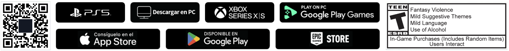

Tu recorrido empieza en
MUSUQ PACHA
Re-descubrí el territorio argentino precolombino y conocé las distintas culturas que lo habitaron
¿Estás listo?
Vista previa de prototipo. El botón alterna entre reproducir y pausar; no reproduce un video.
Descargá ahoraMUSUQ PACHA
- VERSIÓN
- 1.0 · 7 de septiembre de 2026
- TAMAÑO
- 2,4 GB
- IDIOMA
- Español rioplatense · subtítulos

Solo prototipo: no hay archivos de descarga disponibles.